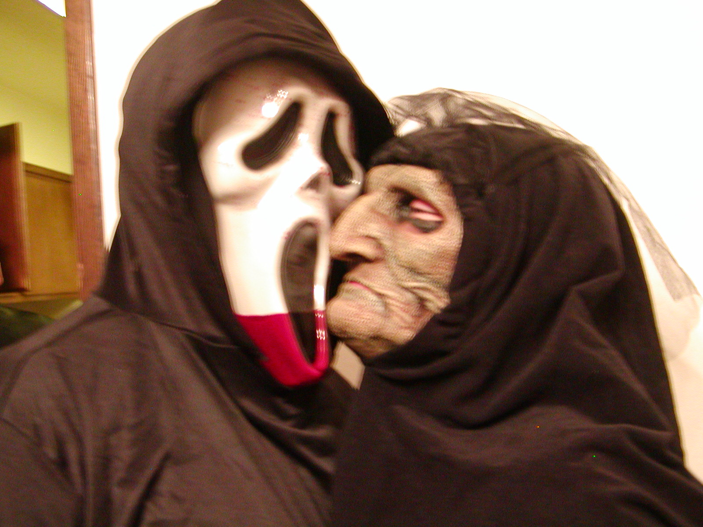
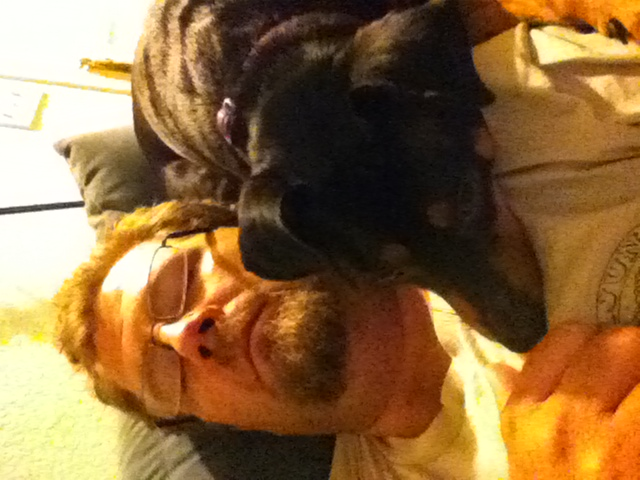

About Me
 Welcome to Scott Parker's home page final project for HTML! He is studying subjects other than business because he really wants to make video games or be involved in the entertainment industry in some other way. What can be better thanb making someone smile, right? Just look at the smiles on those faces in the picture!
Right now he's studying HTML because while HTML may not be enough in itself to create very detailed games it is a fundamental web technology which most web based activities adhere to! Even this page itself would be significantly different without HTML! Of course it's also necessary to learn other web technologies like CSS but also more technical skills such as JavaScript and PHP. Eventually it's going to be necessary to delve into the deep technical area to create physics engines, shaders, graphics engines, etc. This is most likely going to depend on learning languages like C, python, and Java in great detail as well as becoming intimately familiar with numerous graphics libraries.
And just to mention something else...
No docudrama about Scott would be complete without mentioning his irrasciable friend Sharpie. As you can see they are pretty close and Scott tries to take Sharpie with him wherever possible... This has even led to not going places because he didn't want to leave the little guy alone!
It should be obvious at a glance who is the better looking, and possibly more charming, member of the duo. Sharpie was originally part of a family of three, but when the other member of the trio was offered a job in Cheng-du it was too good of an opportunity to pass up. Unfortunately that is how the trio became a duo.
Sharpie is getting longer in the tooth now but he's still pretty spry... especially when his nemesis the cottontail rabbit is infesting Scott's garden. Well, the garden should more aptly be termed rabbit and squirrel complimentary organic buffet. Maybe it's time to start growing toxic plants instead of vegetabes?